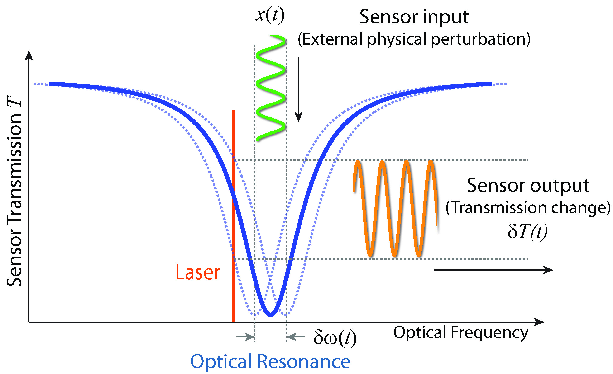

Integrated Quantum Photonics
Advance of quantum optical science in the past few decades has now come to the engineering era of real practical application, which has been witnessed in recent years in the areas of secure communication, metrology, sensing, and potentially future advanced computing.

Integrated Nonlinear Photonics
Nonlinear optical processes have attracted long-lasting interest ever since the first observation of second-harmonic generation, which have found very broad application ranging from photonic signal processing, tunable coherent radiation, frequency metrology, optical microscopy, to quantum information processing.

LN&SiC Photonics
Functionalities of nanophotonic devices/circuits rely crucially on the properties of underlying device materials. We explore new material platforms with outstanding characteristics (electrical, optical, mechanical, thermal, etc.) for diverse applications, with current specific focus on lithium niobate and silicon carbide.

Integrated Photonic Sensing
Integrated photonic platforms are ideal for sensing application. On one hand, a variety of physical mechanisms can be flexibly implemented and integrated for diverse and multi-modal sensing applications.